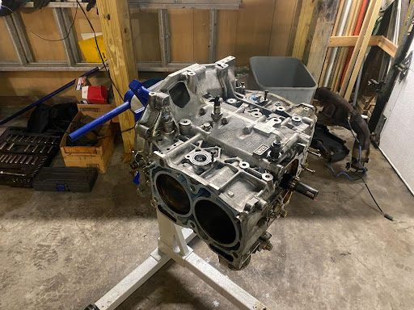
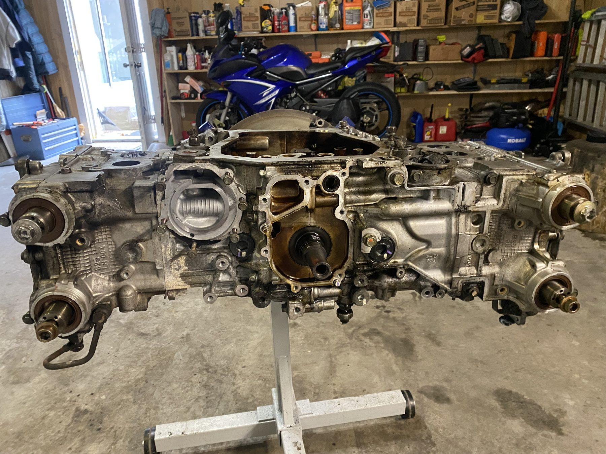
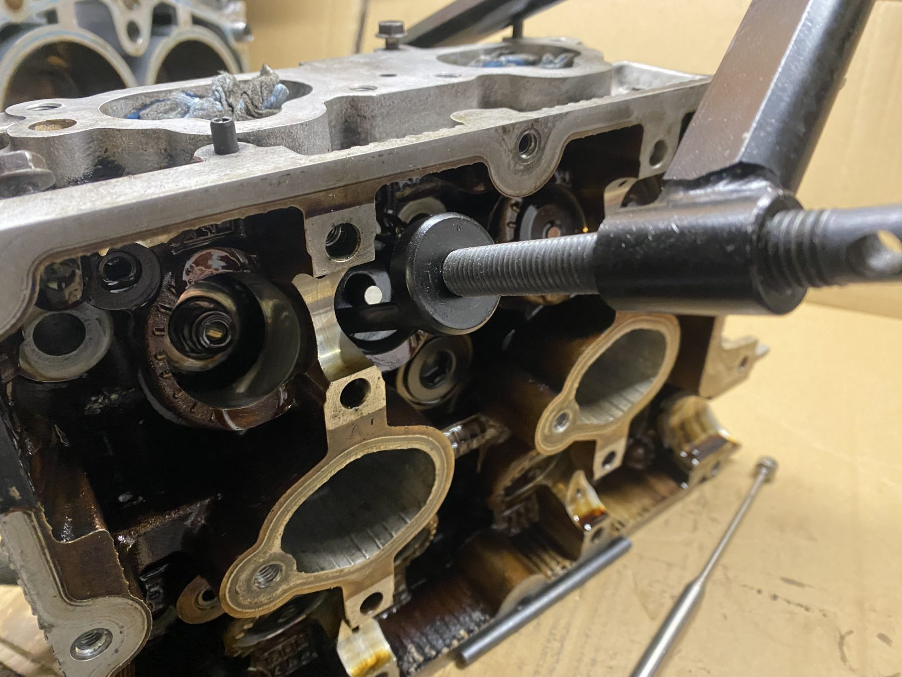
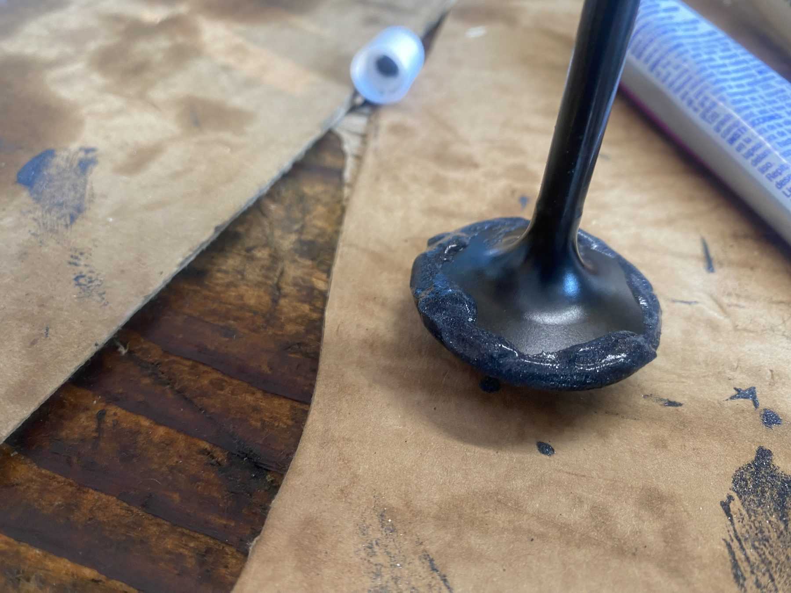
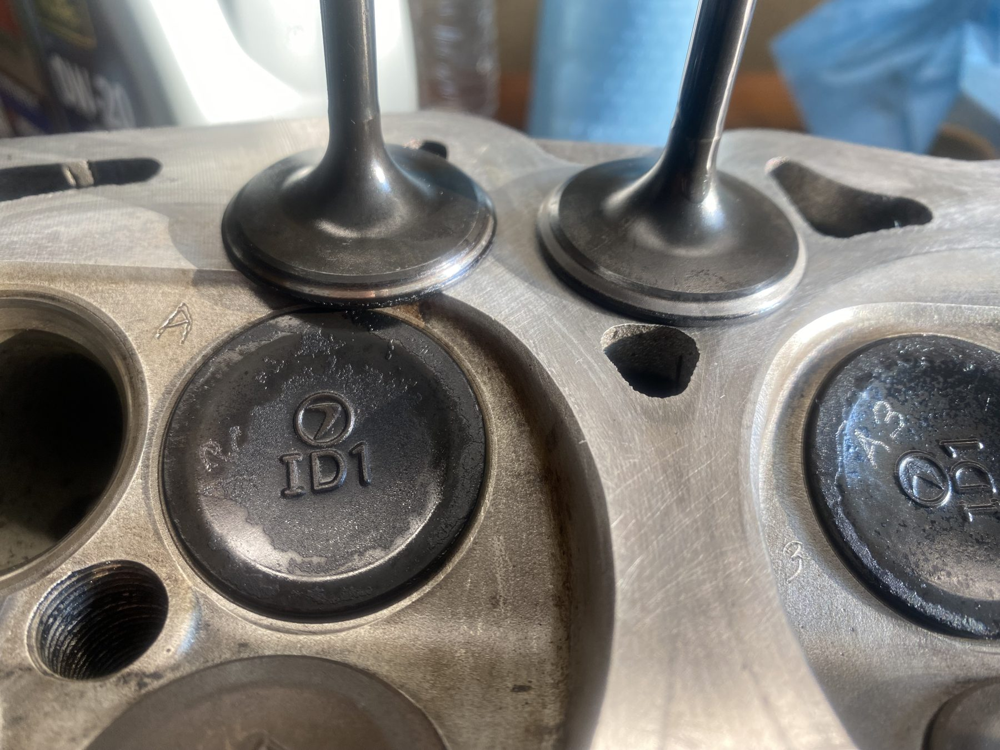
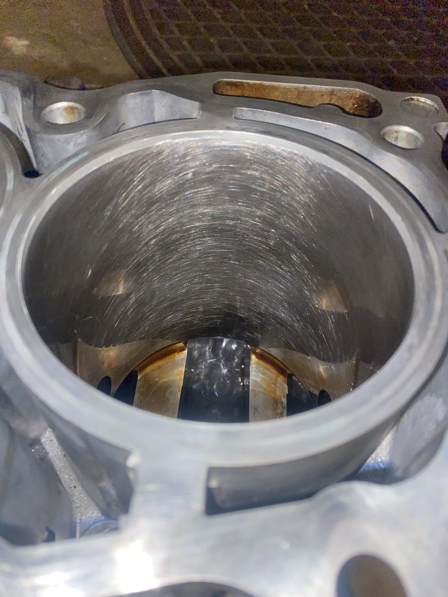
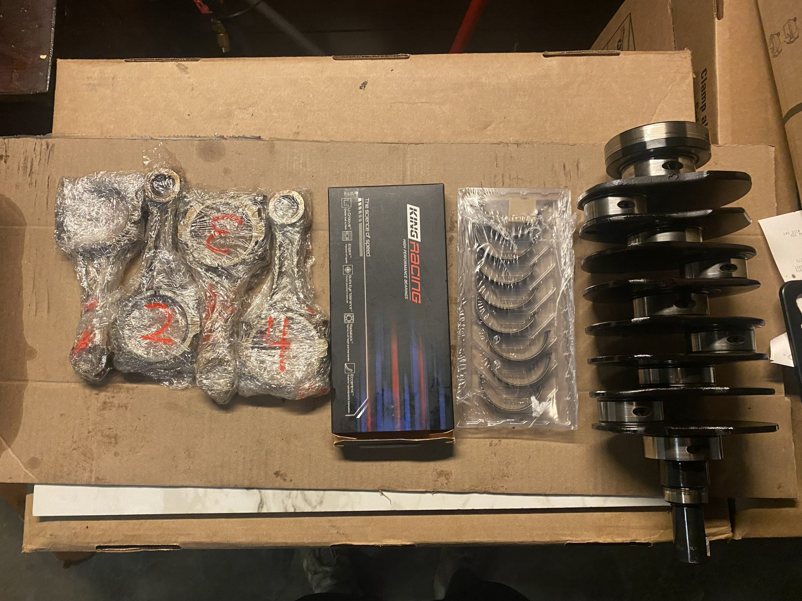
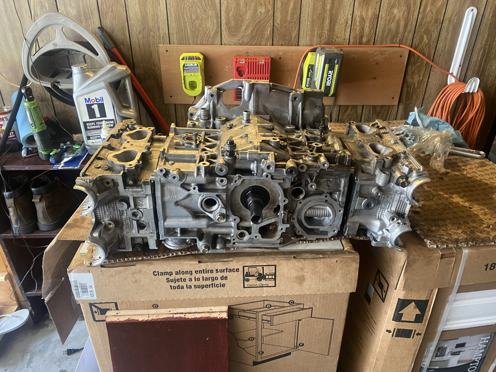

Sourcing
My brother and I found the engine in a 2005 Outback 2.5 XT at a Buffalo junkyard. We pulled the drain plug first to check the oil for metal (a sign of a damaged block), then unbolted the accessories and hoses and pulled the engine.
Teardown
On the stand I removed the exhaust manifold, timing components, cam covers and camshafts, then the heads, compressing the valve springs to remove the valvetrain while tracking where every valve and spring came from. Then the pistons came out, the case was split, and the crank and rods were removed. Everything was labeled.







Prep
- Valve lapping: lapping compound between each valve and its seat, rotated until the grinding sound went quiet, for a full seal
- Head flatness: checked with a machinist's level and feeler gauges; both heads were within Subaru spec
- Honing: deglazed the cylinders with a drill-driven three-stone hone to a 45° crosshatch for ring seating






Assembly
Short block: new rod and main bearings, rods torqued to spec on the crank, four case O-rings, Permatex on the case halves, case bolted and torqued. Ring end gaps checked with feeler gauges, new rings fitted, pistons reinstalled.
Heads: new valve stem seals, valves and springs reinstalled with the spring compressor, retainers back in.
The heads stay off the block for now so the engine is easier to move. New head gaskets go in at install.



